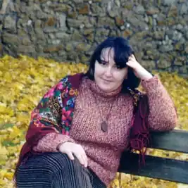

Народилася 13 березня 1965 р. у м. Кишиневі (Молдова).
Закінчила Київське медичне училище № 1.
Працювала операційною медсестрою в лікарнях м. Києва. Закінчила Київський національний університет ім. Т. Шевченка за спеціальністю "Українська філологія та фольклористика" (магістр, 2008). Працює літературним редактором. Мешкає у Києві. Авторка збірок "Хрещаті пелюстки", "Альбом вчорашнього Світання", "До неба". Автор поетичних книжок: "Хрещаті пелюстки" (1999); "Терновий танок" (2000); "Ранкова троянда" (2002); "Альбом вчорашнього світання" (2005); "До неба" (2010); "Квартирія: Казки" (2015; усі — Київ); "Пригоди Тараса у далекому космосі" (2017, Фонтан казок); "Киці-мандрівниці. Як усе почалося" (книжка 1) (2019, Рідна мова); "Киці-мандрівниці. Друг по листуванню" (кн. 2) (2019, Рідна мова); "Киці-мандрівниці. Страшно цікава казка" (кн.3) (2019). Поезія письменниці присвячена християнській тематиці, роздумам над буттям людини у цьому світі. Галина Миколаївна також є упорядником збірників християнської поезії: "На лузі Господньому" (2007); "Струни вічності" (Львів, "Свічадо", 2008); "Молитва вигнанця" (Київ, "Братське", 2010) "Ангели. Дерева. Люди" (усі — Львів, 2013); Співупорядниця: серії "Християнська читанка"; зб. прози Н. Теплоухової "Політ підбитого птаха" (2007); збірки вибраного Олександра Шовтути "Дзвони врятованого сонця" (2010). Автор перекладів із російської мови збірок віршів для дітей Ірини Токмакової "Де спить рибка" (2010), Ірини Пивоварової "Жив собі собака", Ренати Мухи "Ужалений Вуж", Віктора Луніна "З ким ти, зайку, дружиш?" (усі — 2011), Сергія Козлова "Збудував я гарний дім" (2012; усі книжки вийшли у в-ві "Махаон-Україна", Київ). Твори вміщені у багатьох літературних антологіях, альманахах та збірниках ("Радосинь", 2004; "Сонячна Мальвія", 2005, 2007; "Книга про батька", 2013; "Радосинь–23", 2015).